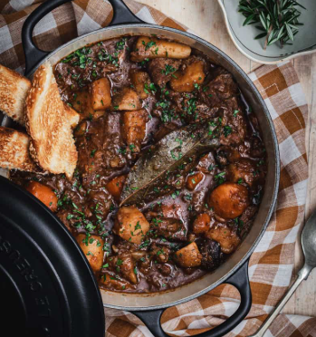

Dutch Oven Beef Stew
Hearty cold weather favorite.

Ingredients
- 2 lb chuck roast, excessive fat deposits trimmed, cut into 2” pieces
- 1 tbsp avocado oil, or olive oil
- 1 large sweet onion, diced to ½”
- 1 large leek, halved and sliced into .5” moons
- 4 cloves garlic, minced
- 2 tbsp tomato paste
- 2 tbsp balsamic vinegar
- 1 quart beef stock, divided
- 1 tsp sea or kosher salt
- 1 tsp cracked black pepper
- 12 oz yukon gold potatoes, chopped into 2” chunks
- 3 large carrots, skins peeled, cut into .5” coins
- 3 stalks celery, cut into ½” coins
- 1 bay leaf
- 2 sprigs fresh thyme, bundled with kitchen twine
- 1 tbsp cornstarch, or arrowroot powder, for Whole30
Instructions - Initial
- Heat oven to 350.
- Cut meat into 2" cubes.
- Dutch Oven on stove over Medium High Heat.
- Add olive oil.
- Add meat to brown in batches (5-6 minutes each).
- Prepare Onions and Leaks.
- Remove browned meat to plate.
- Add prepped onions and leaks - 5-6 minutes.
- Add prepped garlic until fragrant.
- Add tomato paste and work into vegetables.
- Deglaze with balsamic vinegar, let vinegar evaporate (1-2 minutes).
- Return beef to Dutch Oven.
- Add beef stock to cover meat (~3 Cups).
- Stir and add bay leaf and thyme bundle.
- Allow liquid to come to a simmer.
- Cover and place in oven for 2 hours.
Instructions - After 90 Minutes
- Prep potatoes and carrots.
- Prep arrowroot powder and 1 Cup beef broth slurry.
Instructions - At the 2 Hour Mark
- Remove Dutch Oven from Oven.
- Add arrowroot/beef broth slurry.
- Add potatoes, carrots, and celery. Stir well.
- Set on the stove on medium-high until it simmers.
- Cover and place back in the over for an hour before testing for doneness.
- Remove bay leaf and thyme before serving.
Chef's Notes
Tasty and there usually aren't left overs.